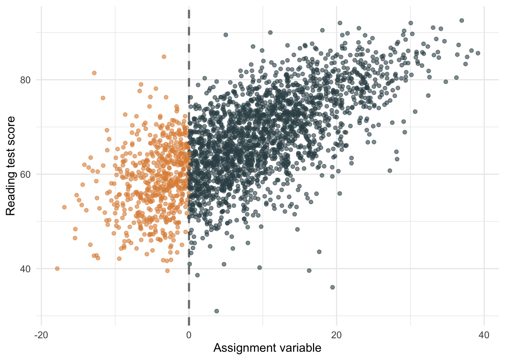
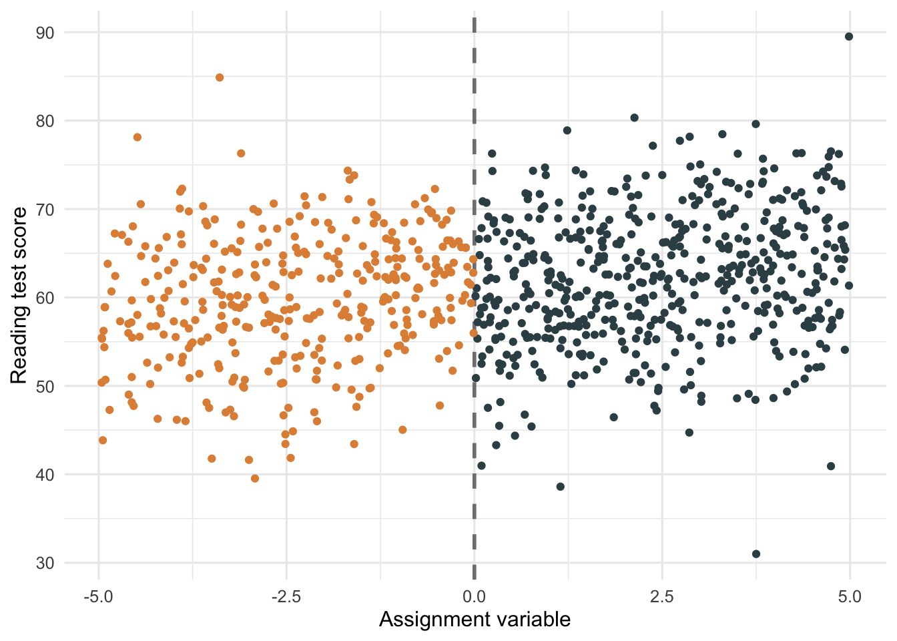
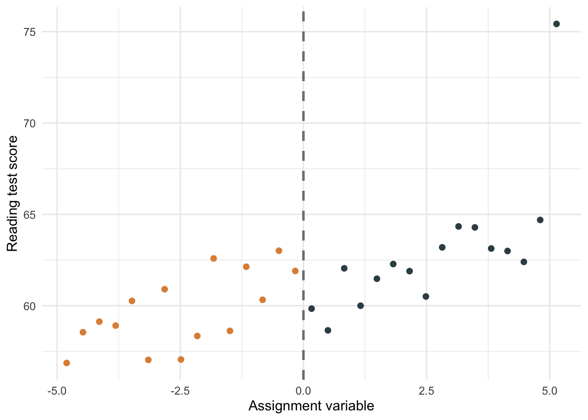
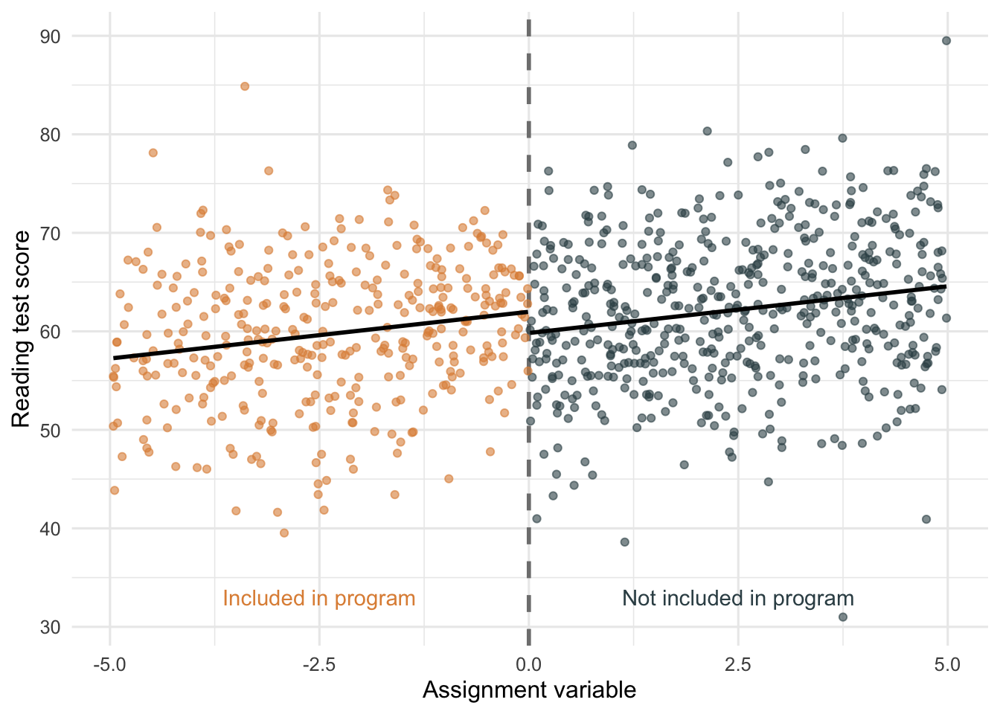

Packages used in this post
library(tidyverse)
library(broom)
library(ggsci)
library(readr)
library(kableExtra)
theme_set(theme_minimal(base_size = 12))
chile <- read_csv("chile.csv")Paw Hansen
June 1, 2023
In the previous post of my “policy evaluator’s toolbox” series, I showed you two basic ways of plotting results from randomized experiments. A randomized experiment should be the design you are going for whenever possible since it allows for easy estimation and clean causal inference.
In practice, though, randomized experiments may not be feasible. Often policymakers are unwilling to assign policies at random, so the question becomes what we can do in those cases if we still want to evaluate if a policy had an effect.
Today, we’ll have a look at one widely-used approach: the regression discontinuity design. Here is the definition I got when asking ChatGPT:
“A regression discontinuity design (RDD) is a quasi-experimental research design used to estimate causal effects by taking advantage of a discontinuity in the treatment assignment process. The basic logic behind RDD is that when a certain threshold or cutoff point is used to determine whether an individual receives a treatment or not, individuals on either side of the cutoff are expected to be similar in all other relevant aspects, except for the treatment itself. By comparing the outcomes of individuals just above and just below the cutoff, researchers can attribute any differences to the treatment rather than other confounding factors.”
This is not a bad definition but I do want to emphasize one core assumptions: the assignment variable should be continuous or “smooth” around the cutoff.
In my field of public welfare, many such cutoff variables exist:
Finally, a popular threshold is test scores, which we will work with today. Specifically, we’ll use the Chile Schools data taken from (the highly recommendable) Regression and Other Stories. Let’s get our packages and load up the data:
The Chile Schools data is a good example of something you will often encounter when doing policy evaluations. In 1992, the Chilean government wanted to improve poor-performing schools. To do so, the government assigned extra resources (teacher training and after-school tutoring) to all schools scoring lower than a predefined cutoff on the average fourth-grade test score. This assignment is clearly not random. In fact, we can be quite certain that the schools that received the extra resources are different from those that did not (that is why those schools received extra help!).
However, as we move closer to the cutoff, it seems more and more likely that the schools falling on either side are not that different. For example, say the cutoff was 60 points on a 100-point scale. Two schools with an average score of 30 and 70 are clearly different, and it makes no sense to compare those. But what about two schools scoring 58 and 62? Do we really believe that those schools differ fundamentally from each other? The key assumption we make in a regression discontinuity design is that the units we look at on either side of the cutoff are as-if random.
A good place to start is to show the raw data on either side of the cutoff. In the Figure 1, all units above the threshold (scaled to zero) received extra help, while those below did not.
# Make a variable saying if schools received the treatment or not
chile <-
chile %>%
mutate(condition = ifelse(rule2 < 0, "Treatment", "Control"))
chile %>%
ggplot(aes(rule2, read92)) +
geom_vline(xintercept = 0, size = 1, color = "grey50", linetype = "dashed") +
geom_point(aes(color = condition), alpha = .6) +
scale_color_jama() +
labs(x = "Assignment variable",
y = "Reading test score") +
theme(legend.position = "none")
However, since we wanted schools to be “alike” (in terms of potential outcomes), we should probably focus the graph on those units that are close to the threshold. Let’s define a cutoff range from -5 through 5 and make a new plot (Figure 2):
chile_sub <-
chile %>%
filter(rule2 < 5, rule2 > -5)
chile_sub %>%
ggplot(aes(rule2, read92)) +
geom_vline(xintercept = 0,
size = 1,
color = "grey50",
linetype = "dashed") +
geom_point(aes(color = condition)) +
scale_color_jama() +
labs(x = "Assignment variable",
y = "Reading test score") +
theme(legend.position = "none")
And we can even make this plot a bit clearer if we use binned averages instead of showing all data points:
chile_sub %>%
ggplot(aes(rule2, read92)) +
geom_vline(xintercept = 0,
size = 1,
color = "grey50",
linetype = "dashed") +
stat_summary_bin(aes(color = condition),
fun = "mean",
size = 2,
geom = "point") +
scale_color_jama() +
labs(x = "Assignment variable",
y = "Reading test score") +
theme(legend.position = "none")
Showing the data (to others but also yourself) is always a good place to start and a key part of of exploratory data analysis. However, to answer the question of interest (did assigning extra help to schools improve reading?), we need a model.
Luckily, the modeling part of a regression discontinuity analysis is straightforward: We simply include the condition and the assignment variable as predictors in our regression model:
| Term | Estimate | Lower bound | Upper bound |
|---|---|---|---|
| Intercept | 59.83 | 58.80 | 60.85 |
| In program | 2.15 | 0.27 | 4.04 |
| Assignment variable | 0.95 | 0.61 | 1.28 |
Thus, the estimated effect of being in the program is about 2.15 points.
To understand this result better, and to present it in an intuitive way to stakeholders, we can plot the model on either side of the cutoff (i.e. the regression line):
chile_sub %>%
ggplot(aes(rule2, read92)) +
geom_vline(xintercept = 0, size = 1, color = "grey50", linetype = "dashed") +
geom_point(aes(color = condition), alpha = .6) +
geom_smooth(
data = chile_sub %>% filter(rule2 < 0),
method = "lm",
color = "black",
se = F) +
geom_smooth(
data = chile_sub %>% filter(rule2 > 0),
method = "lm",
color = "black",
se = F) +
annotate(geom="text",
x = -2.5,
y = 33,
color = "#DF8F44FF",
label = "Included in program") +
annotate(geom="text",
x = 2.5,
y = 33,
color = "#374E55FF",
label = "Not included in program") +
scale_color_jama() +
labs(x = "Assignment variable",
y = "Reading test score") +
theme(legend.position = "none")
The estimated effect of 2.15 points corresponds to the difference (the “kink”) between the two lines.
Finally, in most real-world applications, it makes sense to include pre-treatment variables that strongly predict the outcome since this can make our model estimates more precise. In our example, we have schoolchildren’s math and reading scores in 1988, which is probably useful when trying to predict reading scores in 1992. Let’s include those:
chile_rs_final <-
lm(read92 ~ condition + rule2 + read88 + math88, data = chile_sub)
chile_rs_final %>%
tidy(conf.int=T,) %>%
select(-c("statistic", "std.error", "p.value")) %>%
mutate(term = c("Intercept",
"In program",
"Assignment variable",
"Reading score in 1988",
"Math score in 1988")) %>%
kbl(col.names = c("Term", "Estimate", "Lower bound", "Upper bound"),
digits = 2) | Term | Estimate | Lower bound | Upper bound |
|---|---|---|---|
| Intercept | 23.35 | 14.84 | 31.85 |
| In program | 2.08 | 0.28 | 3.88 |
| Assignment variable | 0.14 | -0.22 | 0.51 |
| Reading score in 1988 | 0.61 | 0.46 | 0.75 |
| Math score in 1988 | 0.16 | -0.01 | 0.32 |
As can be seen, our confidence intervals are now slightly narrower, reflecting the extra information we have included in our analysis.
Regression discontinuity designs (RDD) are a popular way of evaluating policies when randomization b y the researcher is not an option. When doing RDD, we look for naturally occurring cutoffs that split units into a treatment and a control group.
Cutoff variables should be continuous. Finally, be aware that RDD is quasi-experimental. It is not a randomized experiment, and it is on you to prove that the assumptions hold.